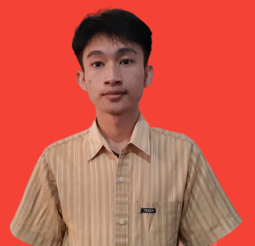

Anugerah Gari

📝 Summary
I am a 2024 student at Universitas Klabat with two years of experience in Customer Support, particularly in handling technical issues related to VPS. Currently, I am developing skills in programming, including learning Dart, Python and web development, to strengthen my technical expertise and support my future professional career.
📚 Education
- (2010 -2016)
Sekolah Dasar Negeri Hilimagari (10220063)
- (2016 -2019)
Sekolah Menengah Pertama Swasta Perguruan Advent Nias (10260093)
- ((2019 -2022))
Sekolah Menengah Atas Negeri 1 Toma (10258207)
🧑🏻💻 Work Experience
Customer Service Representative - Socialvps.net
June 2022 - July 2024
- Answering user inquiries via chat and phone.
- Assisting in resolving VPS-related issues faced by users.
- Helping users utilize VPS by providing tutorials.
- Actively facilitating corrections for user payment errors.
😎 Skills
- Customer Support: ★★★★★
- Customer Office: ★★★★☆
- Organizational skills: ★★★★★
- Python programming ★★★☆☆
- Flutter & Dart programming ★★★☆☆
- C# programming ★★☆☆☆
🏆 Award & Achievement
Elementary School
- Class Championship - 1st Place (2014)
- Class Championship - 1st Place (2015)
- Class Championship - 1st Place (2016)
Junior High School
- Class Championship - 1st Place (2017)
- General School Championship - 3th Place (2017)
- Class Championship - 1st Place (2018)
- General School Championship - 1th Place (2018)
- Class Championship - 3th Place (2019)
Senior High School
- General School Championship - 1st Place (2019)
- Class Championship - 1st Place (2021)
- General School Championship - 1st Place (2021)
Language
- English (Pre intermidiate)
- Bahasa Indonesia
📞 Contact Me